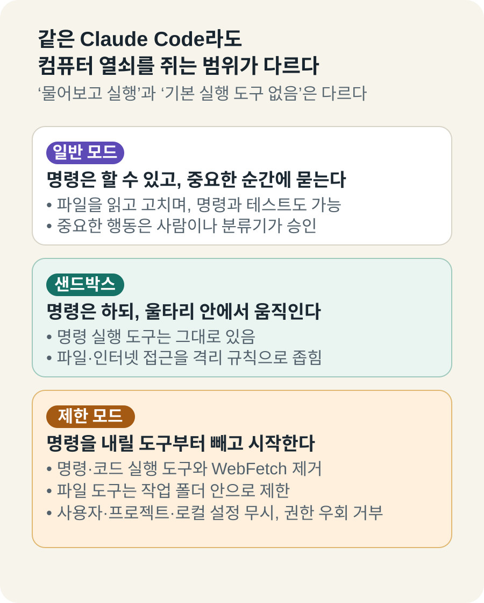
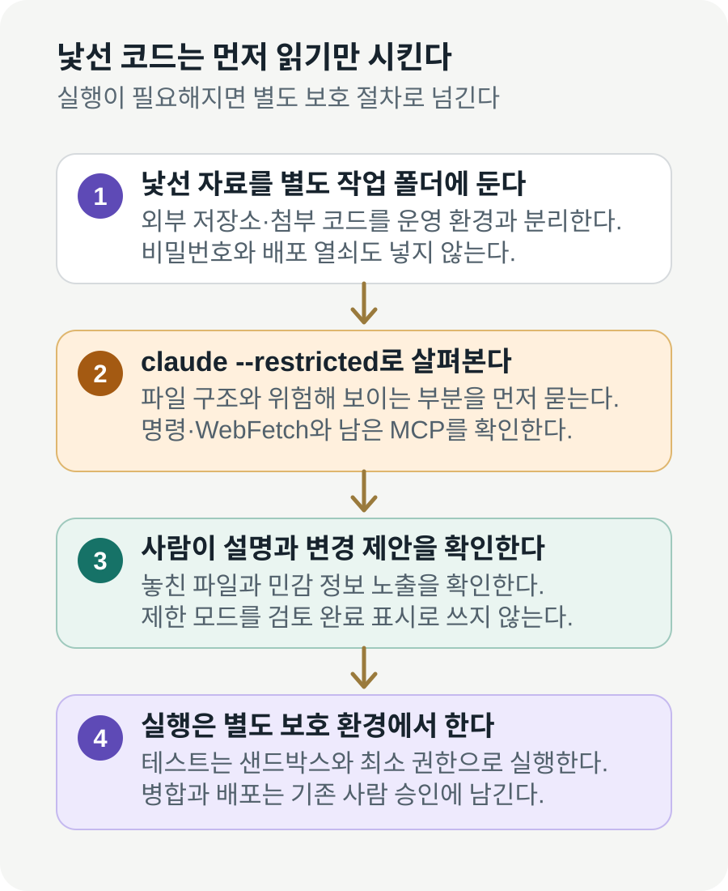

Claude Code, 명령 실행 도구를 기본으로 빼는 ‘제한 모드’ 추가
Anthropic이 AI 코딩 도구 Claude Code에 ‘제한 모드’를 넣었다. 이 모드로 시작하면 명령·코드를 실행하는 기본 도구와 웹페이지를 가져오는 WebFetch가 빠지고, 파일 도구는 작업 폴더 안으로 제한된다. 다만 --tools로 도구를 다시 지정할 수 있고 일부 MCP 연결은 별도로 막아야 하므로, 컴퓨터와 인터넷이 완전히 격리된 모드로 이해하면 안 된다.
코드는 보여 주고, 터미널 열쇠는 주지 않는다
Claude Code는 Anthropic의 AI가 개발자의 프로젝트 폴더를 읽고, 파일을 고치고, 테스트를 돌리며, 필요한 컴퓨터 명령까지 실행하는 도구다. 채팅창에서 답만 주는 Claude보다 훨씬 많은 일을 대신할 수 있다.
그만큼 실수의 결과도 커진다. 설명을 잘못 이해한 AI가 중요한 파일을 지우거나, 낯선 저장소 안에 숨은 지시를 따라 외부 명령을 실행할 수 있기 때문이다. 사람에게 매번 허락을 묻는 장치가 있어도 승인 창을 습관적으로 누르면 방어선이 약해진다.
8월 27일 공개된 Claude Code 2.1.248 릴리스는 이 문제를 다루는 새 선택지를 추가했다. 실행할 때 --restricted를 붙이면 명령과 코드를 실행하는 기본 도구가 빠지고, 웹페이지 내용을 가져오는 WebFetch도 꺼진다.
쉽게 말하면 AI를 컴퓨터 앞에 앉히되 키보드의 ‘명령 실행’ 키를 기본 도구함에서 빼놓는 방식이다. Claude는 시작한 작업 폴더 안의 파일을 읽고 다룰 수 있지만, 터미널에서 프로그램을 돌리거나 WebFetch로 임의의 페이지를 가져오는 길은 기본으로 닫힌다. 다른 MCP 도구나 실행 때 따로 지정한 도구는 별도로 확인해야 한다.
제한 모드는 사용자 설정, 프로젝트 설정, 로컬 설정 파일도 무시한다. 낯선 프로젝트에 들어 있는 설정이 Claude의 행동을 바꾸는 길을 줄이려는 것이다. 모든 승인을 건너뛰는 bypassPermissions도 이 모드에서는 거부한다.
제한 모드가 무조건 읽기 전용이라는 뜻은 아니다. 작업 폴더 안에서는 허용된 파일 도구로 내용을 고칠 수도 있다. 정말 읽기만 시키려면 사용할 도구를 Read·Grep·Glob처럼 별도로 더 좁혀야 한다.
이 차이가 중요하다. ‘명령을 실행하기 전에 물어본다’와 ‘명령을 실행할 도구가 처음부터 없다’는 같은 말이 아니다. 후자는 AI가 잘못 판단하더라도 그 경로로 행동할 수 없게 만든다.

기존 안전장치와 무엇이 다른가
일반 모드의 Claude Code도 처음부터 아무 명령이나 마음대로 실행하는 것은 아니다. 공식 보안 설명에 따르면 수동 모드는 파일 수정, 테스트, 명령 실행처럼 영향이 있는 일을 하기 전에 사람에게 허락을 구한다.
샌드박스는 또 다른 방식이다. 명령 실행 기능은 남겨 두되 파일과 인터넷 접근 범위를 울타리 안으로 가둔다. 테스트를 실제로 돌려야 하지만 회사 컴퓨터 전체에는 접근시키고 싶지 않을 때 유용하다.
제한 모드는 그보다 앞 단계에 어울린다. 실행 자체가 필요 없는 코드 설명, 변경 내용 요약, 의심스러운 파일 찾기, 문서 정리처럼 ‘먼저 살펴보는 일’에 쓸 수 있다. 일본 기술 매체 DevelopersIO도 새 모드를 직접 시험하며 코드 검토나 자동 점검에서 실행 도구를 한꺼번에 제한하는 용도를 짚었다.
예를 들어 외부 업체가 보낸 소스 코드를 검토한다고 해보자. 일반 모드에서는 Claude가 내용을 이해하려고 설치 명령이나 테스트를 제안할 수 있다. 제한 모드에서는 우선 파일 구조와 위험해 보이는 부분을 설명하게 하고, 실제 실행은 사람이 검토한 뒤 별도 환경에서 진행할 수 있다.
자동으로 들어오는 풀 리퀘스트를 요약하는 작업에도 맞는다. AI는 어느 파일이 바뀌었고 어떤 부분을 더 봐야 하는지 정리하되, 빌드 서버에서 임의의 명령을 실행하는 권한은 받지 않는다. 리뷰와 실행을 한 단계에서 동시에 맡기지 않는 것이다.
설정 파일을 무시하는 점도 실무에서는 크다. Anthropic은 과거 Claude를 제품 안에 가두는 방법을 설명한 글에서, 저장소의 설정과 자동 실행 장치가 공격 경로가 될 수 있다고 밝혔다. 제한 모드는 낯선 프로젝트가 준비해 둔 설정을 그대로 믿지 않고 시작한다.
어떤 일부터 맡기면 효과가 보일까?
가장 쉬운 일은 새로 들어온 코드의 ‘지도’를 그리는 것이다. 어떤 폴더가 화면을 만들고, 어디에서 결제를 처리하며, 이번 변경이 어느 기능과 연결되는지 설명하게 할 수 있다. 명령을 한 번도 실행하지 않아도 리뷰어가 먼저 볼 파일의 범위를 줄일 수 있다.
두 번째는 두 버전 사이의 변경 내용을 사람 말로 바꾸는 일이다. AI가 바뀐 함수와 설정을 읽고 “로그인 실패 때 보여 주는 문구가 달라졌다”처럼 결과를 설명하면, 개발자가 아닌 기획자도 검토에 참여하기 쉬워진다. 단, 실제로 프로그램이 그렇게 움직이는지는 테스트로 따로 확인해야 한다.
세 번째는 대량의 설정 파일을 분류하는 일이다. 사용하지 않는 것으로 보이는 설정, 비밀 정보처럼 보이는 문자열, 오래된 안내 문서를 찾아 목록으로 만들게 할 수 있다. 이 단계에서는 삭제하지 않고 후보만 받으면 잘못된 판단을 되돌리기 쉽다.
반대로 설치, 빌드, 데이터베이스 변경, 브라우저 시험이 핵심인 업무에는 제한 모드만으로 끝낼 수 없다. 그런 일은 프로그램을 실제로 움직여야 결과를 알 수 있다. 제한 모드는 일을 끝내는 만능 모드가 아니라, 무엇을 실행할지 결정하기 전의 안전한 읽기 단계에 가깝다.
‘제한’이라는 이름만 믿으면 안 된다
제한 모드는 백신도 아니고 완전한 격리실도 아니다. Claude가 볼 수 있는 작업 폴더에 비밀번호, 고객 정보, 배포용 열쇠가 들어 있다면 그 내용은 여전히 AI의 작업 범위에 들어갈 수 있다.
파일을 고칠 수 있는 도구가 남아 있다면 잘못된 수정도 가능하다. 그래서 ‘코드를 읽혀도 되는가’와 ‘파일을 바꿔도 되는가’를 따로 판단해야 한다. 검토만 맡길 때는 읽기 도구만 명시하고, 원본이 아닌 복사본에서 시작하는 편이 안전하다.
--tools로 실행 도구나 WebFetch를 다시 명시하면 제한 범위가 달라질 수 있다. 제한 모드를 켰다는 표시만 보고 안전하다고 판단하지 말고, 실제로 어떤 도구를 함께 허용했는지 확인해야 한다.
제한 모드가 모든 외부 연결과 설정을 없애는 것도 아니다. DevelopersIO의 실제 비교 시험에서는 --restricted만 사용했을 때 claude.ai 커넥터를 통한 MCP 서버가 남았고, 외부 연결을 더 좁히려면 --strict-mcp-config를 함께 써야 했다. 사용자·프로젝트·로컬 설정은 무시하지만 조직의 관리 설정과 명시적으로 건넨 --settings는 계속 적용됐다.
독립 연구도 ‘AI에게 하지 말라고 글로 써 두는 것’과 프로그램이 실제로 막는 통제는 다르다고 지적한다. 8월 공개된 사전 논문 When “Do Not” Is Not Deny는 CLAUDE.md에 적힌 자연어 보안 지시 중 상당수가 강제되는 권한 규칙이 아니라 모델의 해석에 의존한다고 분석했다.
따라서 중요한 것은 더 강한 경고 문장을 쓰는 일이 아니라, 실행 도구 제거·폴더 분리·네트워크 제한처럼 컴퓨터가 강제할 수 있는 경계를 겹쳐 두는 것이다. 사람의 최종 검토도 이 경계 밖에 남아 있어야 한다.
또 하나 남는 문제는 AI의 해석 오류다. 명령을 못 내리게 해도 존재하는 파일을 빠뜨리거나, 정상 코드를 취약점으로 오해하거나, 여러 파일의 관계를 잘못 설명할 수 있다. 행동 권한을 줄이는 기능과 답변의 정확도를 높이는 기능은 서로 다르다.
데이터가 어디에서 처리되는지도 별도 문제다. 제한 모드는 내 컴퓨터에서 사용할 도구를 줄이는 장치이지, 회사 코드가 어떤 계약과 보관 정책 아래 처리되는지를 결정하는 기능은 아니다. 민감한 소스라면 조직용 약관, 데이터 보관 기간, 모델 학습 사용 여부를 따로 확인해야 한다.
그래서 팀 규칙에는 “제한 모드 사용” 한 줄보다 구체적인 정보가 필요하다. 어느 폴더에서 시작했는지, 그 안에 어떤 데이터가 있었는지, 읽기와 쓰기 중 무엇을 허용했는지, 외부 도구를 추가했는지까지 남겨야 같은 작업을 다시 확인할 수 있다.

한국 팀이 처음 시험한다면
첫 시험은 외부 공개 저장소 하나를 복사한 폴더에서 하면 된다. 비밀키와 회사 자료를 넣지 않은 뒤 제한 모드로 실행하고, “이 프로젝트가 하는 일, 바뀐 파일, 위험해 보이는 부분만 설명해 달라”고 요청한다.
다음에는 정말 명령 실행 도구와 WebFetch가 빠졌는지 확인한다. 테스트 실행이나 웹페이지 조회를 부탁했을 때 수행하지 않는지, 작업 폴더 밖 파일을 읽으려 할 때 거부되는지 기록한다. 동시에 MCP 도구 목록과 관리 설정도 확인한다. 기능 이름보다 실제 경계가 어떻게 작동하는지가 중요하다.
AI의 설명도 사람이 확인해야 한다. 중요한 파일을 빼먹지 않았는지, 정상 코드를 위험하다고 오해하지 않았는지, 수정 제안이 요구사항과 맞는지 본다. Anthropic의 자동 보안 검토 안내도 AI 검토가 기존 보안 절차와 사람 리뷰를 보완하는 도구라고 설명한다.
테스트나 수정이 필요해지는 순간에는 별도 단계로 넘긴다. 샌드박스, 최소 권한 계정, 인터넷 차단, 기존 CI 검사를 적용한 환경에서 실행한다. 제한 모드를 해제한 같은 창에서 곧바로 모든 권한을 주는 방식은 경계를 만든 취지를 약하게 한다.
회사는 실행 기록에 모드 이름만 남기지 말고 허용된 도구 목록, 시작 폴더, 읽을 수 있던 자료, 사람이 승인한 다음 행동을 함께 남기는 편이 좋다. 그래야 문제가 생겼을 때 AI가 실제로 어디까지 할 수 있었는지 되짚을 수 있다.
공용 자동화에 넣을 때는 Claude Code 버전도 고정하는 편이 좋다. 업데이트로 기본 도구나 설정 해석이 달라질 수 있기 때문이다. 새 버전을 적용하기 전에는 같은 시험 폴더에서 명령 실행, 폴더 밖 읽기, 파일 수정이 각각 어떻게 처리되는지 다시 확인하면 된다.
검토 결과를 곧바로 병합 승인으로 쓰지 않는 것도 중요하다. 제한 모드는 AI가 컴퓨터에 할 수 있는 일을 줄이지만, AI가 리뷰를 잘했다는 보증서는 아니다. 기존 코드 소유자의 확인과 자동 테스트, 보안 검사는 그대로 통과해야 한다.
AI 코딩 경쟁이 ‘얼마나 잘 짜나’에서 ‘어디까지 시키나’로 간다
이번 업데이트는 Claude가 더 똑똑한 코드를 쓴다는 발표가 아니다. 오히려 AI가 할 수 있는 일을 일부러 줄이는 기능이다. 코딩 에이전트가 회사 업무 깊숙이 들어오면서 성능만큼 권한의 크기가 제품 경쟁력이 되고 있다는 신호다.
모든 작업에 제한 모드를 쓸 필요는 없다. 프로그램을 만들고 테스트까지 돌리는 일에는 일반 모드와 샌드박스가 더 알맞다. 다만 낯선 자료를 처음 열거나, 많은 변경을 자동으로 분류하거나, 리뷰와 실행을 분리하고 싶을 때는 훨씬 이해하기 쉬운 출발점이 생겼다.
특히 개발자가 아닌 사람이 결과를 함께 봐야 하는 조직에서는 이 분리가 유용하다. 제품 담당자는 AI가 정리한 변경 이유와 영향 범위를 먼저 읽고, 개발자는 실제 실행이 필요한 항목만 골라 보호된 시험 환경으로 넘길 수 있다. 모두에게 터미널 권한을 주지 않고도 검토 대화를 시작할 수 있는 셈이다.
Claude Code의 새 기능을 한 문장으로 줄이면 이렇다. AI에게 코드를 보여 주되, 컴퓨터를 움직일 열쇠는 나중에 따로 주는 모드다. 이름이 안전을 보장하는 것은 아니지만, 검토와 실행을 분리할 수 있다는 점은 실제 팀이 바로 시험해 볼 만한 변화다.
더 읽을 자료
- Anthropic — Claude Code v2.1.248 릴리스 노트
- Anthropic — Claude Code 보안 문서
- Anthropic — Claude Code 권한 모드 안내
- Anthropic Engineering — How we contain Claude across products
- Anthropic Help Center — Automated Security Reviews in Claude Code
- DevelopersIO — Claude Code v2.1.248 제한 모드 사용기
- arXiv — When “Do Not” Is Not Deny